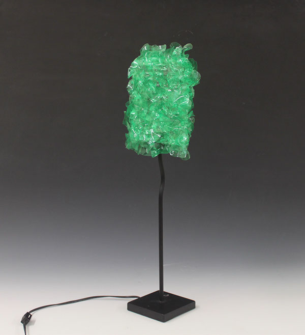
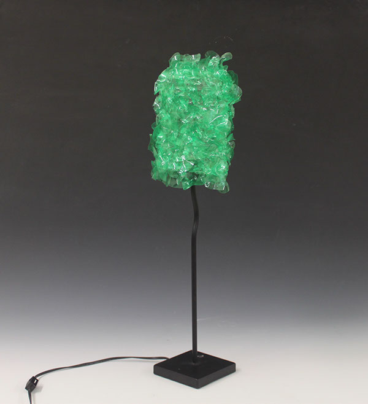

Sculptural Forms
2013
Projects are based on environmental awareness.Recreation of the Doritos package in felt. Upcycled Lamp. This lamp was made out of found material, which is the base of the lamp and plastic bottles.Mobile Workstation. This project required to use cardboard as a material. The project turned out to be a protest towards administration, who gave a limited time to students for studio access. The idea was to show how less we need to build our own workstation and by setting up the workstation in different public spaces, we showed how students don't have an access to their studios and struggle to do their work in any given space. In the first picture, the work station is about to be set up at the library.
 
